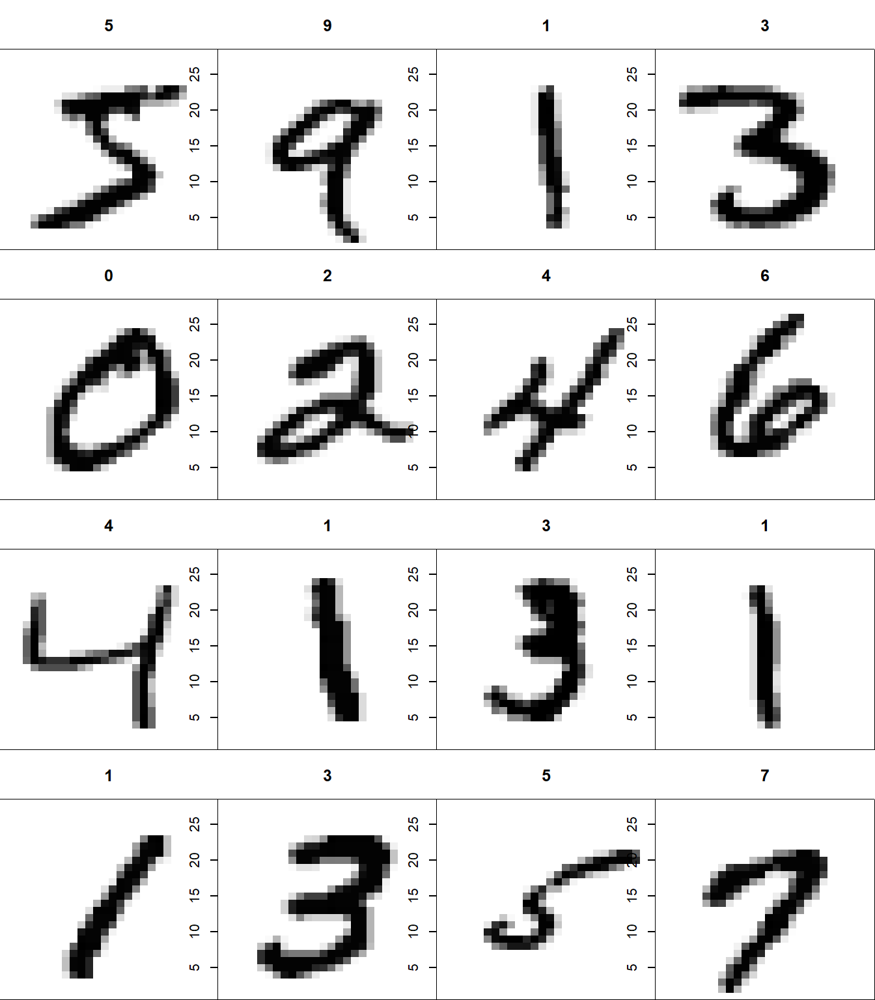
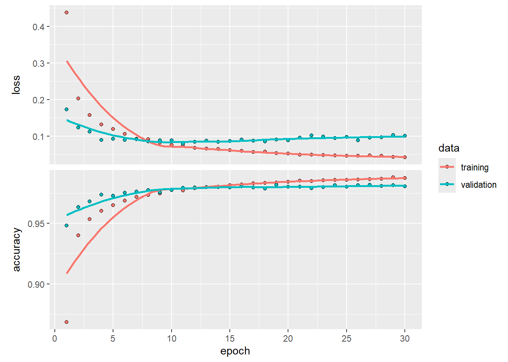
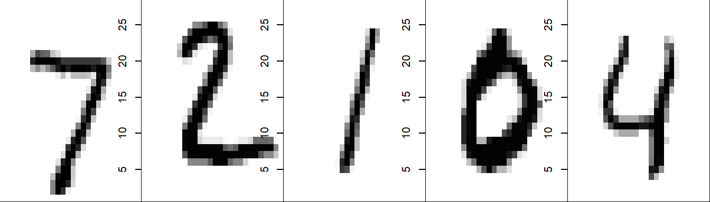

library(keras)
mnist <- dataset_mnist()
x_train <- mnist$train$x
y_train <- mnist$train$y
x_test <- mnist$test$x
y_test <- mnist$test$yDeep Learning
DNN: Ejemplo de Keras y MNIST en R
Revisaremos un ejemplo utilizando la keras en R, con datos de dígitos escritos a mano a través de la base de datos de MNIST que se descargará a través de la misma librería. Intentaremos implementar un modelo de aprendizaje profundo con un Perceptrón Multicapa en una red de propagación hacia adelante.
El enlace para el código original puede ser encontrado acá.
1 Cargamos librería y datos
MNIST consta de imágenes en escala de grises de 28 x 28 pixeles de números escritos a mano y sus respectivas etiquetas.
El dataset MNIST viene incluído en la librería Keras y puede ser utilizado al usar la función dataset_mnist(). A continuación cargamos los datos y los separamos en subconjuntos de entrenamiento (x_train, y_train) y prueba (x_test, y_test), tanto para los datos de input del modelo (las imagenes, o x), como para los datos de output del modelo (las etiquetas o y) tal como se muestra a continuación:
Una vez cargados los datos podemos efectuar una pequeña exploración de las imagenes y sus respectivas etiquetas, acá mostramos 16 imagenes:
# Visualizar los datos como imagenes
par(mfcol=c(4,4))
par(mar=c(0, 0, 3, 0), xaxs='i', yaxs='i')
for (i in 1:16) {
im <- x_train[i,,]
im <- t(apply(im, 2, rev))
image(1:28, 1:28, im, col=gray(1-(0:255)/255),
xaxt='n', main=paste(y_train[i]))
}
2 Preprocesamiento de los datos
Los datos x son un arreglo de 3 dimensiones (n° de imagen, ancho, alto) de valores en escala de grises. Para preparar los datos para el entrenamiento, convertimos los arreglos de 3 dimensiones en matrices al reorganizar el ancho y el alto en una sola dimensión (las imágenes de 28x28 se aplanan en vectores de longitud 784). Luego, convertimos los valores en escala de grises de enteros que varían entre 0 a 255 a valores decimales (punto flotante) en el intervalo (0, 1):
# Transformación de los arreglos (reshape)
x_train <- array_reshape(x_train, c(nrow(x_train), 784))
x_test <- array_reshape(x_test, c(nrow(x_test), 784))
# Escalamiento de los datos (rescale)
x_train <- x_train / 255
x_test <- x_test / 255Considera que usamos la función array_reshape() en lugar de la función dim<-() para reorganizar la forma (shape) del arreglo. Esto es para que los datos se reinterpreten usando la semántica de orden por filas (a diferencia de la semántica de orden por columnas que usa R por defecto), lo cual es compatible con la forma en que las bibliotecas numéricas que Keras llama interpretan las dimensiones del arreglo.
Los datos y son un vector de enteros con valores que van del 0 al 9. Para preparar estos datos para el entrenamiento, codificamos los vectores en matrices de clases binarias utilizando la función de Keras to_categorical():
y_train <- to_categorical(y_train, 10)
y_test <- to_categorical(y_test, 10)3 Definiendo el Modelo
La estructura central de Keras es un modelo, una forma de organizar capas. El tipo más sencillo es el modelo Sequential, en el que incorporamos capas una encima de otra de manera lineal.
Un modelo Sequential es apropiado para una pila simple de capas donde cada capa tiene exactamente un tensor de entrada y un tensor de salida.
Un modelo Sequential no es apropiado cuando:
- Tu modelo tiene múltiples entradas o múltiples salidas.
- Cualquiera de tus capas tiene múltiples entradas o múltiples salidas.
- Necesitas compartir capas.
- Quieres una topología no lineal (por ejemplo, una conexión residual, un modelo de múltiples ramas).
Comenzamos creando un modelo secuencial y luego añadimos capas utilizando el operador de tubería (pipe, %>%):
model <- keras_model_sequential()
model %>%
layer_dense(units = 256, activation = 'relu', input_shape = c(784)) %>%
layer_dropout(rate = 0.4) %>%
layer_dense(units = 128, activation = 'relu') %>%
layer_dropout(rate = 0.3) %>%
layer_dense(units = 10, activation = 'softmax')El argumento input_shape en la primera capa (capa de entrada) indica la forma de los datos de entrada (un vector numérico de longitud 784 que representa una imagen en escala de grises aplanada). La capa final entrega un vector numérico de longitud 10 (probabilidades para cada dígito) utilizando una función de activación softmax.
La función de activación
softmax, que es común en la capa de salida de problemas de clasificación multiclase. Convierte las salidas en probabilidades de que cada clase sea la correcta.El
dropoutes una técnica de regularización usada para prevenir el sobreajuste al “apagar” aleatoriamente un porcentaje de las unidades (neuronas) durante el entrenamiento. Las capas dedropoutque se implementan (0.4 y 0.3), apagan el 40% y el 30% de las neuronas de las capas respectivas.
3.1 Visualizando el modelo
Utilizamos la función summary() para imprimir los detalles del modelo:
summary(model)Model: "sequential"
________________________________________________________________________________
Layer (type) Output Shape Param #
================================================================================
dense_2 (Dense) (None, 256) 200960
dropout_1 (Dropout) (None, 256) 0
dense_1 (Dense) (None, 128) 32896
dropout (Dropout) (None, 128) 0
dense (Dense) (None, 10) 1290
================================================================================
Total params: 235146 (918.54 KB)
Trainable params: 235146 (918.54 KB)
Non-trainable params: 0 (0.00 Byte)
________________________________________________________________________________Hay maneras de graficar los modelos de Deep Learning, como la librería deepviz, que requiere instalarla a través de
devtools::install_github("andrie/deepviz")Utilizamos la librería deepviz para graficar un esquema de nuestro modelo de manera esquemática. En Python existen algunas librerías más para efectuar esto.
library(deepviz)
library(magrittr)
model %>% plot_model()3.2 Compilar el modelo
Luego, compilamos el modelo, con una función de pérdida (loss) un optimizador (optimizer) y métricas (metrics):
model %>% compile(
loss = 'categorical_crossentropy',
optimizer = optimizer_rmsprop(),
metrics = c('accuracy')
)La función de pérdida que el modelo usará para evaluar qué tan bien predice las etiquetas de los datos será la entropía cruzada categórica (
categorical_crossentropy), una función de pérdida común para problemas de clasificación multiclase, como es el caso de nuestro modelo.El optimizador (
optimizer) definirá el algoritmo que se utilizará para actualizar los pesos de la red durante el entrenamiento.RMSpropes un optimizador que ajusta el tamaño del paso de aprendizaje de manera adaptativa, lo que ayuda a mejorar la convergencia del modelo en el proceso de entrenamiento.Las métricas que se deben calcular y mostrar durante el entrenamiento que ayudarán a monitorear el desempeño del mismo. La precisión (
accuracy) es una métrica común que mide el porcentaje de predicciones correctas sobre el total de predicciones hechas.
4 Entrenamiento y evaluación del modelo
Usamos la función fit() para entrenar el modelo durante 30 épocas empleando conjuntos de 128 imagenes:
history <- model %>% fit(
x_train, y_train,
epochs = 30, batch_size = 128,
validation_split = 0.2
)Epoch 1/30
375/375 - 1s - loss: 0.4375 - accuracy: 0.8684 - val_loss: 0.1727 - val_accuracy: 0.9480 - 1s/epoch - 4ms/step
Epoch 2/30
375/375 - 1s - loss: 0.2033 - accuracy: 0.9401 - val_loss: 0.1239 - val_accuracy: 0.9634 - 865ms/epoch - 2ms/step
Epoch 3/30
375/375 - 1s - loss: 0.1581 - accuracy: 0.9534 - val_loss: 0.1123 - val_accuracy: 0.9680 - 975ms/epoch - 3ms/step
Epoch 4/30
375/375 - 1s - loss: 0.1322 - accuracy: 0.9603 - val_loss: 0.0896 - val_accuracy: 0.9736 - 810ms/epoch - 2ms/step
Epoch 5/30
375/375 - 1s - loss: 0.1192 - accuracy: 0.9648 - val_loss: 0.0930 - val_accuracy: 0.9726 - 834ms/epoch - 2ms/step
Epoch 6/30
375/375 - 1s - loss: 0.1056 - accuracy: 0.9688 - val_loss: 0.0897 - val_accuracy: 0.9753 - 879ms/epoch - 2ms/step
Epoch 7/30
375/375 - 1s - loss: 0.0926 - accuracy: 0.9719 - val_loss: 0.0912 - val_accuracy: 0.9760 - 895ms/epoch - 2ms/step
Epoch 8/30
375/375 - 1s - loss: 0.0917 - accuracy: 0.9732 - val_loss: 0.0858 - val_accuracy: 0.9772 - 900ms/epoch - 2ms/step
Epoch 9/30
375/375 - 1s - loss: 0.0821 - accuracy: 0.9745 - val_loss: 0.0888 - val_accuracy: 0.9756 - 914ms/epoch - 2ms/step
Epoch 10/30
375/375 - 1s - loss: 0.0764 - accuracy: 0.9776 - val_loss: 0.0888 - val_accuracy: 0.9773 - 1s/epoch - 3ms/step
Epoch 11/30
375/375 - 1s - loss: 0.0745 - accuracy: 0.9771 - val_loss: 0.0792 - val_accuracy: 0.9792 - 1s/epoch - 3ms/step
Epoch 12/30
375/375 - 1s - loss: 0.0679 - accuracy: 0.9790 - val_loss: 0.0841 - val_accuracy: 0.9797 - 978ms/epoch - 3ms/step
Epoch 13/30
375/375 - 1s - loss: 0.0660 - accuracy: 0.9800 - val_loss: 0.0873 - val_accuracy: 0.9800 - 1s/epoch - 3ms/step
Epoch 14/30
375/375 - 1s - loss: 0.0652 - accuracy: 0.9801 - val_loss: 0.0847 - val_accuracy: 0.9798 - 1s/epoch - 3ms/step
Epoch 15/30
375/375 - 1s - loss: 0.0616 - accuracy: 0.9815 - val_loss: 0.0865 - val_accuracy: 0.9796 - 1s/epoch - 3ms/step
Epoch 16/30
375/375 - 1s - loss: 0.0594 - accuracy: 0.9821 - val_loss: 0.0910 - val_accuracy: 0.9804 - 1000ms/epoch - 3ms/step
Epoch 17/30
375/375 - 1s - loss: 0.0569 - accuracy: 0.9831 - val_loss: 0.0880 - val_accuracy: 0.9794 - 970ms/epoch - 3ms/step
Epoch 18/30
375/375 - 1s - loss: 0.0576 - accuracy: 0.9831 - val_loss: 0.0851 - val_accuracy: 0.9787 - 940ms/epoch - 3ms/step
Epoch 19/30
375/375 - 1s - loss: 0.0539 - accuracy: 0.9837 - val_loss: 0.0908 - val_accuracy: 0.9817 - 935ms/epoch - 2ms/step
Epoch 20/30
375/375 - 1s - loss: 0.0525 - accuracy: 0.9843 - val_loss: 0.0888 - val_accuracy: 0.9803 - 914ms/epoch - 2ms/step
Epoch 21/30
375/375 - 1s - loss: 0.0497 - accuracy: 0.9853 - val_loss: 0.0961 - val_accuracy: 0.9801 - 904ms/epoch - 2ms/step
Epoch 22/30
375/375 - 1s - loss: 0.0494 - accuracy: 0.9850 - val_loss: 0.1020 - val_accuracy: 0.9790 - 893ms/epoch - 2ms/step
Epoch 23/30
375/375 - 1s - loss: 0.0479 - accuracy: 0.9854 - val_loss: 0.0990 - val_accuracy: 0.9798 - 884ms/epoch - 2ms/step
Epoch 24/30
375/375 - 1s - loss: 0.0470 - accuracy: 0.9859 - val_loss: 0.0952 - val_accuracy: 0.9813 - 904ms/epoch - 2ms/step
Epoch 25/30
375/375 - 1s - loss: 0.0459 - accuracy: 0.9859 - val_loss: 0.0983 - val_accuracy: 0.9803 - 890ms/epoch - 2ms/step
Epoch 26/30
375/375 - 1s - loss: 0.0468 - accuracy: 0.9860 - val_loss: 0.0891 - val_accuracy: 0.9814 - 902ms/epoch - 2ms/step
Epoch 27/30
375/375 - 1s - loss: 0.0470 - accuracy: 0.9863 - val_loss: 0.0956 - val_accuracy: 0.9817 - 978ms/epoch - 3ms/step
Epoch 28/30
375/375 - 1s - loss: 0.0460 - accuracy: 0.9866 - val_loss: 0.0966 - val_accuracy: 0.9808 - 1s/epoch - 3ms/step
Epoch 29/30
375/375 - 1s - loss: 0.0432 - accuracy: 0.9879 - val_loss: 0.1026 - val_accuracy: 0.9813 - 1s/epoch - 3ms/step
Epoch 30/30
375/375 - 1s - loss: 0.0419 - accuracy: 0.9873 - val_loss: 0.1006 - val_accuracy: 0.9805 - 1s/epoch - 3ms/stepEl parámetro
epochs = 30(épocas) especifica el número de ciclos completos de entrenamiento sobre el conjunto de datos (en este caso 30 ciclos). Una época se refiere a una iteración sobre todos los datos de entrada y salida proporcionados.El tamaño de lotes (batches,
batch_size = 128) define el número de muestras sobre las que se calculará el gradiente y se actualizará el modelo en cada iteración del entrenamiento. Un tamaño de lote de 128 indica que el modelo procesará 128 ejemplos en cada paso del entrenamiento.La partición para la validación interna (
validation_split = 0.2), se reserva el 20% del conjunto de datos de entrenamiento para validar el rendimiento del modelo de manera interna durante el proceso de entrenamiento. La validación se utiliza para evaluar cómo el modelo generaliza en datos no vistos durante el entrenamiento, permitiendo un control efectivo del sobreajuste. Es una técnica de regularización.
4.1 Desempeño del entrenamiento
El objeto history almacena las métrricas de loss y accuracy del entrenamiento y la validación interna del modelo. Este objeto puede ser graficado como se ve a continuación:
plot(history)
4.2 Desempeño de los datos de prueba
Evaluamos las métricas de desempeño del modelo
model %>% evaluate(x_test, y_test)313/313 - 0s - loss: 0.0875 - accuracy: 0.9828 - 240ms/epoch - 766us/step loss accuracy
0.08747123 0.98280001 4.3 Predicciones con los datos de prueba
También, podemos extraer las predicciones del modelo y compararlas con las imagenes, a través de instancias de preprocesamiento logramos extraer las predicciones del modelo con los datos del conjunto de prueba.
predicciones = model %>%
predict(x_test) %>%
k_argmax() %>%
array_reshape(., dim = c(10000, 1)) %>%
as.vector()313/313 - 0s - 307ms/epoch - 980us/steppredicciones[1:5][1] 7 2 1 0 4Y lo comparamos con las 5 primeras imagenes
x_test2 <- mnist$test$x
par(mfrow=c(1,5))
par(mar=c(0, 0, 0, 0), xaxs='i', yaxs='i')
for (i in 1:5) {
im <- x_test2[i,,]
im <- t(apply(im, 2, rev))
image(1:28, 1:28, im, col=gray(1-(0:255)/255),
xaxt='n')
}
Finalmente mostramos una matriz de confusión para las predicciones del conjunto de prueba
table(Estimado = predicciones,
Observado = as.vector(k_argmax(y_test))) Observado
Estimado 0 1 2 3 4 5 6 7 8 9
0 974 0 2 0 0 2 4 2 1 2
1 1 1127 0 0 0 0 2 2 1 2
2 1 2 1015 2 2 0 0 9 2 0
3 1 1 3 995 0 10 1 3 5 4
4 0 0 2 0 966 1 5 0 5 12
5 1 1 0 4 0 869 5 0 3 2
6 0 2 2 0 5 2 941 0 2 0
7 1 1 5 4 0 1 0 1010 3 2
8 1 1 3 2 2 3 0 1 946 0
9 0 0 0 3 7 4 0 1 6 985Parece que nuestro modelo de Deep Learning logró aprende bastante bien los patrones de los pixeles de las imagenes.